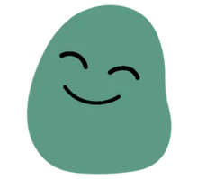
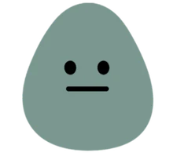
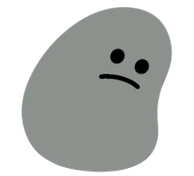

Voice journal · Android & iPhone
Your voice.
Your days.
Your echoes.
Talk about your day for a minute. Echoes writes it down, picks up the mood and sums up each week and month for you, so the small things don't get lost. Your journal stays on your phone.
Thursday, 15 October
Good evening, Ana
Day 5 of 7
2 more days to your goal
Recent days



Five moods
Every day gets a face.
Echoes reads the mood of each entry and gives the day one of five characters. Over a few weeks, the calendar shows how your days really felt.
Great
Good
Neutral
Low
Very low
No blank page.
Just talk.
Tap the button and talk for up to three minutes, or type up to 500 words if you'd rather write. Echoes turns your voice into text, so a daily entry takes about a minute. It doesn't need to be tidy: just say whatever's on your mind.
Recording
0:42
Tap to finish and save
It picks up how
your day felt.
Each entry gets a mood, and the day is coloured to match. If Echoes gets it wrong, tap the mood and pick the one that fits.
Today's entry
Long day at work, but the walk home was lovely and I finally rang Gran back.
A short summary of
every week and month.
After a week with a few entries, Echoes writes a short summary of what happened and what came up more than once. Each month gets one too, so you can look back on the bigger picture.
It describes. It doesn't lecture: no advice, no guesses, nothing you didn't say.
Last week
Your echo
The week started slowly, with two long days at work. Wednesday's walk home and the call with Gran lifted things, and most of the weekend was spent outdoors. The days with time outside were the ones described as best.
Read more
Notice what you'd
otherwise miss.
From day five, Insights shows which days of the week tend to be your best and your toughest, your average mood this month and how often you've journaled. The more you use it, the clearer the picture.
Patterns
Best day
Thursday
tends to be your best day
Toughest day
Monday
tends to be harder
This month
Goodaverage mood
Consistency
13 / 15
days journaled this month
Build the habit,
one day at a time.
Pick a streak goal of 3, 7, 14 or 30 days and see your plan: when your first weekly echo arrives and when your mood patterns unlock. Reach it, and Echoes celebrates with you, then asks if you'd like to go further.
Your goal
- Day 1Your first entry
- Day 5Your mood patterns unlock
- Day 7Goal reached
And the small things
Made for real life.
Quick entries
Something else happened? Add a short note to today's entry at any time.
Drafts
Not finished? Save it as a draft and come back to it later.
Missed a day?
You can still add yesterday's entry, so one busy evening doesn't break the habit.
Night owls welcome
Tell Echoes when your day usually ends, and an entry at 1am still counts for the day you lived.
Backup and restore
Save your whole journal and settings to a file, and bring it back on a new phone.
No account
No sign-up and no password. Open the app and start talking.
Privacy
Your journal stays
on your phone.
Stored on your device
Entries, moods and summaries live in the app on your phone, not on a server.
Processed, not kept
To make the text, the mood and your summaries, recordings and entries are sent to AI services for processing. Echoes doesn't keep a copy.
No ads, no tracking
The app has no ads and no analytics, and your data is never sold.
Want to try it early?
Echoes is being tested with a small group before it launches on Android and iPhone in 2027. Fill in a short form and I'll let you know when there's a place.
Ask to test it earlyThe developer
Antoni Gruba
I'm a Computer Science student at the University of London building Echoes as my final-year AI project. I wanted a journaling app that didn't make me stare at a blank text box - so I built one you can just talk to.